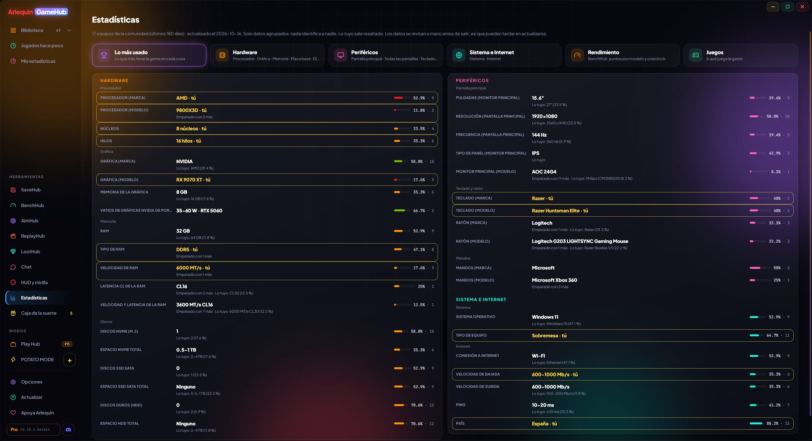

플레이하며 함께 만들어 갑니다
GameHub는 다른 사람의 데이터베이스를 복사하지 않습니다. 자체 데이터베이스는 이 프로그램을 사용하는 사람들의 PC에서 알아낸 정보로 만들어지며, 익명으로, 그리고 원하는 경우에만 반영됩니다.

플레이할수록 커지는 데이터베이스
각 게임이 세이브를 어디에 저장하는지, 무엇이 게임이고 무엇이 아닌지, 그래픽 카드별로 FPS가 얼마나 나오는지를 알기 위해 GameHub는 이를 처음부터 직접 만들고 있습니다.
내 PC가 이미 아는 것
GameHub는 스토어가 내 PC에 보관하는 정보(예: Steam의 클라우드 규칙)를 읽고 각 게임의 폴더를 찾아냅니다.
플레이하면서 학습합니다
게임이 세이브를 어디에 저장하는지 모르면, 플레이하는 동안 어떤 파일이 기록되는지 지켜보고 세이브 폴더를 학습합니다.
원하면 공유합니다
“Arlequin 개선에 참여”를 켜면 이 경로, 내 하드웨어, 내 FPS가 익명으로 전송됩니다. 세이브, 사용자 이름, 비밀번호는 절대 전송되지 않습니다.
검토 후 공개됩니다
들어온 정보는 공개 데이터베이스에 반영되기 전에 검토되며, GameHub는 새 버전이 나오면 이를 자동으로 내려받습니다.
모두에게 이득입니다
더 많은 PC에서 게임이 자동으로 인식되고 FPS 예상치는 더 정확해집니다.
커뮤니티 통계
GameHub로 플레이하는 사람들이 어떤 그래픽 카드, CPU, 화면, 주변기기를 쓰는지.
Steam 하드웨어 조사와 비슷하지만 더 자세합니다: RAM 속도와 지연 시간, 모니터 패널 종류와 크기, 키보드와 마우스 모델, 인터넷 속도, 가상 메모리 등. 모두 백분율로 표시되고 누구인지 알 수 있는 정보는 전혀 없으며, 각 제조사 색상으로 표시됩니다. CPU와 그래픽 카드는 게임 성능순으로 정렬되고 내 부품은 강조되어 비교할 수 있습니다.
사용자가 공유한 정보로 계산됩니다. 하드웨어를 공유하거나 ArlequinPro가 있는 사용자에게 표시됩니다.
"가장 많이 사용"을 한눈에, 컨트롤러와 모든 화면(주 화면과 보조 화면), 메인보드, 그래픽 카드 제조사, RAM 프로필, 그리고 오버클럭 여부별 모델별 BenchHub 점수가 있는 성능 탭이 있습니다.
사용 방법
- 사이드바의 도구 → “통계”.
- GameHub를 어디서 다운로드했는지(Microsoft Store 또는 웹사이트)에 따라 필터링할 수도 있습니다.
- 각 드라이브의 브랜드, 모델, 용량을 보여 주는 “드라이브(모델)” 카드가 있으며, RAM은 기본 클럭과 오버클럭(OC)을 따로 보여 줍니다.
내 PC의 예상 FPS
플레이하기 전에, 나와 비슷한 PC에서 게임이 몇 FPS가 나올지.
플레이어들이 측정한 FPS(그리고 그때 사용한 그래픽 설정과 화면)를 바탕으로, GameHub는 내 PC와 비슷한 PC에서 각 게임이 각 품질(낮음, 중간, 높음, 울트라)에서 몇 FPS가 나오는지, 그리고 GPU와 CPU 중 어느 쪽이 성능을 가로막는지 계산합니다. 게임 페이지에서 볼 수 있습니다.
플레이어가 필요합니다. 게임의 데이터가 적을 때는 Steam 요구 사양에서 추정한 대략적인 값입니다. 커뮤니티 값은 자신의 세션을 공유하거나 ArlequinPro가 있는 사용자에게 표시됩니다.
사용 방법
- FPS를 측정하고(옵션 → 내 PC) 세션을 공유하세요.
내 데이터, 내 선택
공유되는 정보는 익명이며 선택 사항이고, 지표별로 직접 선택합니다.
“Arlequin 개선에 참여”를 켜면 GameHub는 모두에게 도움이 되는 정보를 익명으로 공유합니다: 게임의 저장 위치(문서/My Games/게임 같은 경로), 내 PC의 하드웨어, 그리고 FPS를 측정한다면 세션 요약. 세이브, 사용자 이름, 비밀번호, 일련번호는 절대 공유되지 않습니다.
무엇을 공유할지 하나씩 직접 선택합니다(경로, 하드웨어, 화면, 키보드와 마우스, 인터넷, 국가, 세션). 내 데이터는 언제나 볼 수 있으며, 커뮤니티 데이터(통계와 예상 FPS)는 해당 지표를 공유하거나 ArlequinPro가 있는 사용자에게 표시됩니다.
사용 방법
- 옵션 → 개인정보 및 데이터.
- 자세한 내용은 개인정보 처리방침에서 확인하세요.